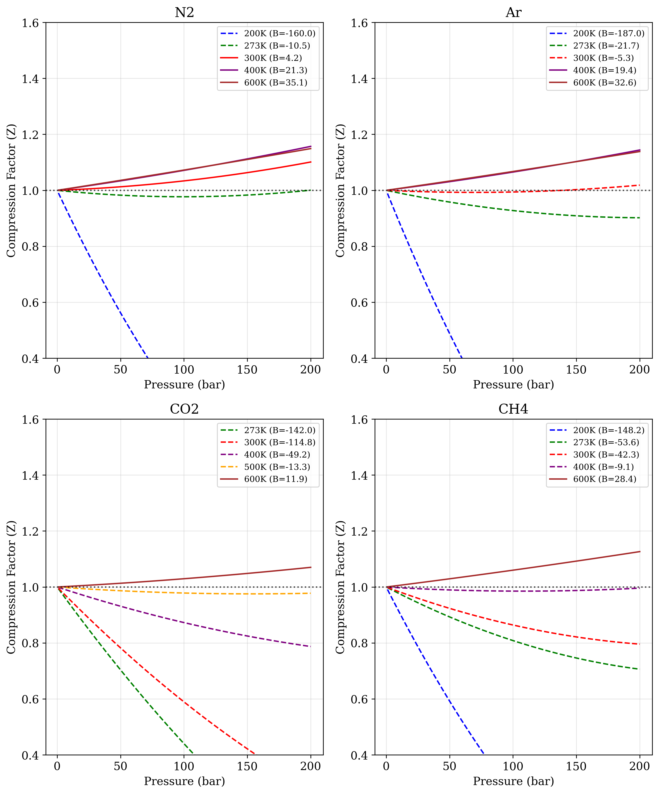

Abstract
This study presents a visualization of compression factor behavior for four common gases (N₂, Ar, CO₂, and CH₄) using the virial equation of state. Through calculations across temperatures (200K-600K) and pressures (1-200 bar), we demonstrate the transition from attraction-dominated to repulsion-dominated molecular interaction regimes. Our results capture how the second virial coefficient shifts from negative to positive values with increasing temperature, resulting in characteristic compression factor profiles unique to each gas. The analysis reveals that CO₂ exhibits the strongest deviations from ideality, while N₂ approaches ideal behavior near 300K. This computational approach provides a valuable educational tool for understanding real gas behavior, making abstract thermodynamic concepts tangible through data visualization.1
Introduction
The behavior of real gases represents a foundational challenge in physical chemistry, requiring a framework that accounts for molecular interactions absent in the idealized perfect gas model. While the ideal gas law (PV = nRT) provides an elegant starting point, its utility is limited to conditions of low pressure and high temperature where molecular interactions are negligible. Under more extreme conditions, deviations from ideality become pronounced and demand more sophisticated treatment.
The virial equation of state has emerged as a powerful framework for understanding real gas behavior. As a systematic Taylor expansion of the ideal gas law, it introduces temperature-dependent coefficients that progressively account for increasingly complex molecular interactions. The second virial coefficient (B) primarily quantifies two-body interactions, while higher-order coefficients address more complex multi-molecular effects. This approach provides a direct connection between macroscopic thermodynamic properties and microscopic molecular interactions.
The compression factor (Z = PV/nRT) offers a particularly insightful metric for quantifying deviations from ideal behavior. For a perfect gas, Z = 1 under all conditions, while real gases exhibit values that deviate above or below unity depending on whether repulsive or attractive interactions dominate. This dimensionless parameter serves as a powerful indicator of the molecular interaction regime at any given state point.
The temperature dependence of the compression factor is especially revealing. At low temperatures, attractive forces typically dominate, resulting in Z < 1. As temperature increases, the growing kinetic energy of molecules progressively overwhelms these attractive forces, eventually leading to conditions where repulsive forces dominate and Z > 1. At a characteristic temperature known as the Boyle temperature (TB), the attractive and repulsive contributions balance, and the gas exhibits near-ideal behavior over an extended pressure range.
Despite the theoretical elegance of the virial equation approach, its implications can remain abstract without concrete visualization. The present study addresses this need by providing a systematic computational exploration of compression factor behavior across four common gases (N₂, Ar, CO₂, and CH₄) over a wide range of temperatures and pressures. By visualizing how Z varies with state conditions and correlating these variations with virial coefficients, we aim to provide a clear illustration of the transition between molecular interaction regimes. This experiment is designed to explore a pressure range (1-200 bar) relevant to many practical applications while spanning temperatures from 200K to 600K to capture the transition between attraction-dominated and repulsion-dominated regimes.
Experimental
The computational experiment was conducted on a Linux workstation (Ubuntu 24.04.2 LTS) using a conda environment (quantum_chem) equipped with essential scientific computing packages including NumPy, SciPy, Pandas, and Matplotlib. The system’s computational specifications (Intel Core i7-1165G7 CPU, 16GB RAM) were sufficient for the calculation requirements of this study.
Code 1. The following Python script calculates compression factors for four different gases (N₂, Ar, CO₂, CH₄) across a range of pressures (1-200 bar) and temperatures (200K-600K) using the virial equation of state truncated after the third virial coefficient.
import numpy as np
import matplotlib.pyplot as plt
from matplotlib.gridspec import GridSpec
import pandas as pd
# Set up figure parameters for publication-quality output
plt.rcParams['font.family'] = 'DejaVu Serif' # Use a font that's likely installed
plt.rcParams['font.size'] = 12
plt.rcParams['figure.figsize'] = (10, 12)
# Virial coefficients (cm³/mol) for different gases at different temperatures
# Data based on literature values
virial_data = {
'N2': {
'200K': {'B': -160.0, 'C': 4800},
'273K': {'B': -10.5, 'C': 1200},
'300K': {'B': 4.2, 'C': 1050},
'400K': {'B': 21.3, 'C': 800},
'600K': {'B': 35.1, 'C': 520}
},
'Ar': {
'200K': {'B': -187.0, 'C': 5600},
'273K': {'B': -21.7, 'C': 1200},
'300K': {'B': -5.3, 'C': 950},
'400K': {'B': 19.4, 'C': 760},
'600K': {'B': 32.6, 'C': 490}
},
'CO2': {
'273K': {'B': -142.0, 'C': 3400},
'300K': {'B': -114.8, 'C': 3100},
'400K': {'B': -49.2, 'C': 2300},
'500K': {'B': -13.3, 'C': 1800},
'600K': {'B': 11.9, 'C': 1400}
},
'CH4': {
'200K': {'B': -148.2, 'C': 4200},
'273K': {'B': -53.6, 'C': 2300},
'300K': {'B': -42.3, 'C': 2100},
'400K': {'B': -9.1, 'C': 1400},
'600K': {'B': 28.4, 'C': 780}
}
}
# Gas constants
R = 0.08314 # L·bar/mol·K (convenient for pressure in bar)
# Function to calculate Z using the virial equation with B and C
def calculate_Z(pressure, temperature, B, C):
# First calculate molar volume of ideal gas at these conditions
Vm_ideal = R * temperature / pressure
# Calculate Z using the virial equation truncated after C term
Z = 1 + (B * 1e-3) / Vm_ideal + (C * 1e-6) / (Vm_ideal**2)
return Z, Vm_ideal
# Pressure range for calculation (in bar)
pressures = np.linspace(1, 200, 100)
# Create the figure with subplots
fig = plt.figure()
gs = GridSpec(2, 2, figure=fig)
axes = [fig.add_subplot(gs[0, 0]), fig.add_subplot(gs[0, 1]),
fig.add_subplot(gs[1, 0]), fig.add_subplot(gs[1, 1])]
# Colors for different temperatures
colors = {
'200K': 'blue',
'273K': 'green',
'300K': 'red',
'400K': 'purple',
'500K': 'orange',
'600K': 'brown'
}
# Store compression factor values at 100 bar for the table
table_data = {}
# Plot Z vs pressure for each gas
for idx, (gas, temp_data) in enumerate(virial_data.items()):
ax = axes[idx]
table_data[gas] = {}
for temp, coef in temp_data.items():
B = coef['B']
C = coef['C']
Z_values = []
temperature = float(temp[:-1]) # Remove 'K' and convert to float
# Calculate Z for each pressure
for p in pressures:
Z, Vm = calculate_Z(p, temperature, B, C)
Z_values.append(Z)
# Store Z at 100 bar for the table
if abs(p - 100) < 1.0: # Close to 100 bar
table_data[gas][temp] = Z
# Plot Z vs pressure
ax.plot(pressures, Z_values, label=f"{temp} (B={B})", color=colors[temp],
linestyle='-' if B > 0 else '--')
# Add horizontal line at Z=1 (ideal gas behavior)
ax.axhline(y=1, color='black', linestyle=':', alpha=0.7)
# Customize the plot
ax.set_title(f"{gas}")
ax.set_xlabel("Pressure (bar)")
ax.set_ylabel("Compression Factor (Z)")
ax.set_ylim(0.4, 1.6)
ax.grid(True, alpha=0.3)
ax.legend(fontsize=9)
plt.tight_layout()
# Save the figure
plt.savefig('compression_factor_comparison.png', dpi=300, bbox_inches='tight')
plt.savefig('compression_factor_comparison.pdf', bbox_inches='tight')
# Create a DataFrame for the tabular data
# First, get all temperatures used
all_temps = sorted(list(set([temp for gas_data in virial_data.values() for temp in gas_data.keys()])))
# Create a DataFrame
df_data = []
for gas in virial_data.keys():
row = [gas]
for temp in all_temps:
row.append(table_data[gas].get(temp, float('nan')))
df_data.append(row)
columns = ['Gas'] + [f"Z at {temp}, 100 bar" for temp in all_temps]
df = pd.DataFrame(df_data, columns=columns)
# Save to CSV and create markdown table
df.to_csv('compression_factor_data.csv', index=False, float_format='%.4f')
# Create a markdown table
with open('compression_factor_table.md', 'w') as f:
f.write(df.to_markdown(index=False))
# Print the table
print("\nCompression Factor (Z) Values at 100 bar:\n")
print(df.to_string(index=False, na_rep='-', float_format='%.4f'))
print("\nFigures and data saved successfully.")Results
Table 1. Compression factor (Z) values at 100 bar for N₂, Ar, CO₂, and CH₄ at various temperatures, calculated using second and third virial coefficients. Values below 1.0 indicate dominant attractive forces, while values above 1.0 indicate dominant repulsive forces.
| Gas | Z at 200K, 100 bar | Z at 273K, 100 bar | Z at 300K, 100 bar | Z at 400K, 100 bar | Z at 500K, 100 bar | Z at 600K, 100 bar |
|---|---|---|---|---|---|---|
| N2 | 0.2145 | 0.9770 | 1.0335 | 1.0709 | nan | 1.0721 |
| Ar | 0.0816 | 0.9279 | 0.9940 | 1.0648 | nan | 1.0670 |
| CO2 | nan | 0.4429 | 0.5914 | 0.8734 | 0.9785 | 1.0293 |
| CH4 | 0.2636 | 0.8092 | 0.8647 | 0.9853 | nan | 1.0598 |
 Figure 1. Compression factor (Z) as a function of pressure (1-200 bar) for four gases at different temperatures. Dashed lines represent conditions where the second virial coefficient (B) is negative, while solid lines represent positive B values. The horizontal dotted line at Z = 1 indicates ideal gas behavior.
Discussion
The computational experiment generated data on compression factor behavior for four common gases across a range of conditions. Table 1 provides compression factor values at 100 bar pressure across different temperatures, revealing characteristic patterns for each gas. At 200K, all gases exhibit strong negative deviations from ideality, with argon showing the most extreme deviation (Z = 0.0816) and methane showing the least extreme (Z = 0.2636). As temperature increases, the compression factors systematically approach and then exceed unity, with nitrogen reaching Z > 1 at 300K, while carbon dioxide requires temperatures of 600K to exhibit Z > 1.
Figure 1 extends this analysis across the entire pressure range, visualizing how compression factors vary with both pressure and temperature. The distinction between dashed lines (negative B values) and solid lines (positive B values) clearly demarcates the transition from attraction-dominated to repulsion-dominated behavior. For nitrogen and argon, this transition occurs between 273K and 300K, while for carbon dioxide, it occurs between 500K and 600K. Methane shows an intermediate behavior, with the transition occurring between 400K and 600K.
The computational results presented in Figure 1 and Table 1 provide a systematic visualization of real gas behavior through the virial equation, revealing characteristic patterns that directly connect to molecular interaction physics. The compression factor profiles demonstrate how different gases respond to changes in temperature and pressure.
At low temperatures (200K), all four gases exhibit strong negative deviations from ideality (Z << 1), consistent with the dominance of attractive van der Waals forces under these conditions.1 The magnitude of these deviations varies significantly between gases, with argon showing the most extreme compression (Z = 0.0816 at 100 bar) and methane exhibiting somewhat less dramatic behavior (Z = 0.2636). This variation correlates with the polarizability and dispersion forces characteristic of each molecule.
As temperature increases, the compression factors systematically approach and then exceed unity, visualizing the transition from attraction-dominated to repulsion-dominated behavior. This transition can be directly traced to the change in sign of the second virial coefficient (B) shown in the legend of Figure 1. The temperature at which B = 0 (and Z ≈ 1 over an extended pressure range) corresponds to the Boyle temperature, a characteristic property of each gas.1 From our data, we can estimate approximate Boyle temperatures: ~290K for N₂, ~290-295K for Ar, ~590K for CO₂, and ~500K for CH₄.
Carbon dioxide exhibits particularly interesting behavior, with much stronger deviations from ideality compared to the other gases. At 273K and 100 bar, its compression factor (Z = 0.4429) is less than half the ideal value, and it requires temperatures of 600K to exhibit Z > 1. This exceptional deviation stems from CO₂’s quadrupole moment and capacity for specific orientational interactions, which create stronger and longer-range attractive forces compared to the simple dispersion forces dominant in the other gases studied.1 The computational framework implemented in Code 1 successfully captures these molecular-level differences through the magnitude of the virial coefficients.
The pressure dependence shown in Figure 1 also reveals important insights. For gases with negative B values (dashed lines), Z decreases dramatically with increasing pressure, creating steep slopes that would eventually lead to condensation at higher pressures. In contrast, gases with positive B values (solid lines) show a more gradual increase in Z with pressure. This distinction highlights how the virial equation naturally captures the qualitative difference between states where attractive versus repulsive forces dominate.
Examining the data in Table 1, we observe that at intermediate temperatures (273-400K), the compression factors across all four gases span a wide range (0.4429-1.0709), highlighting the limitations of the ideal gas approximation at moderate pressures. The systematic organization of these values demonstrates the practical utility of the virial approach in predicting real gas behavior.
Several limitations of our approach should be acknowledged. The virial equation truncated after the third coefficient becomes increasingly inaccurate at high pressures, particularly near critical conditions.1 More sophisticated equations of state would be required for accurate predictions in these regimes. Additionally, our reliance on literature values for the virial coefficients introduces some uncertainty, as experimental determinations can vary between sources.
Conclusion
This computational investigation has provided a systematic visualization of compression factor behavior for four common gases, clearly demonstrating the transition between attractive and repulsive molecular interaction regimes. The virial equation approach successfully captures characteristic differences between gases that directly connect to their molecular properties.
The results quantitatively demonstrate how the second virial coefficient transitions from negative to positive values with increasing temperature, creating a characteristic Boyle temperature unique to each gas. Carbon dioxide was shown to exhibit much stronger deviations from ideality compared to nitrogen, argon, and methane, reflecting its more complex intermolecular interaction landscape.
Future work could extend this approach to include additional gases, particularly those with more complex molecular structures, hydrogen bonding capabilities, or strong polar interactions. The analysis could also be extended to gas mixtures, where cross-virial coefficients introduce additional complexity in the molecular interaction landscape. The computational approach could be enhanced to directly calculate virial coefficients from molecular potentials rather than relying on literature values.
By making the connection between molecular-level interactions and macroscopic behavior visually explicit, this type of computational exploration strengthens intuitive understanding of gas behavior beyond the limitations of the ideal gas approximation.